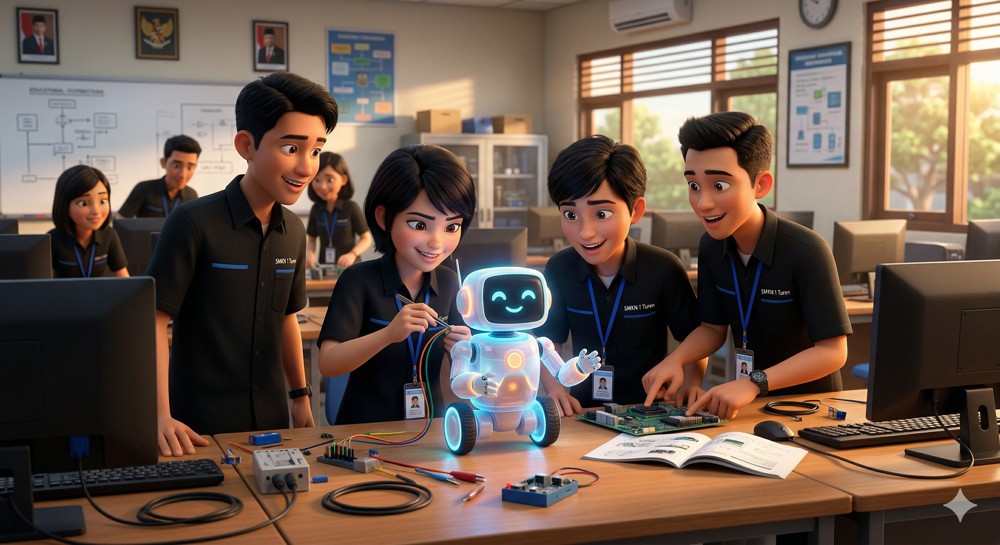
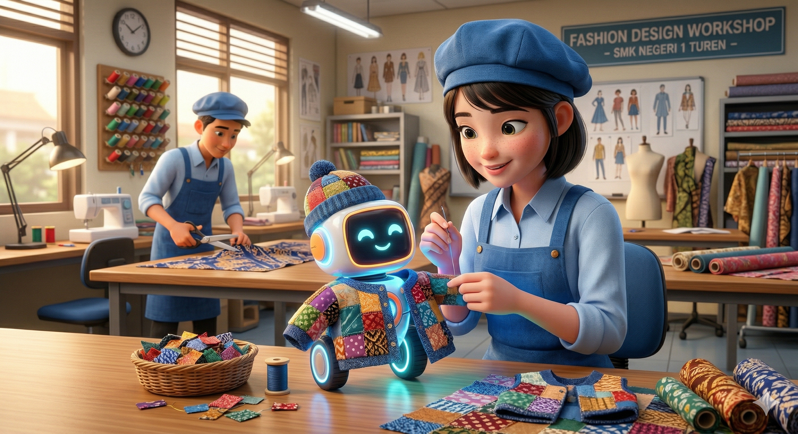
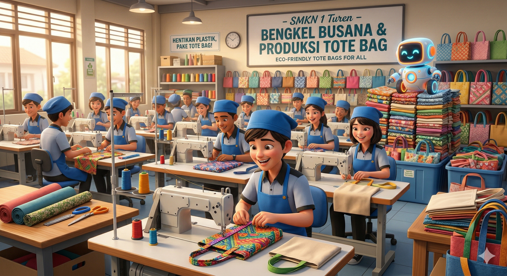
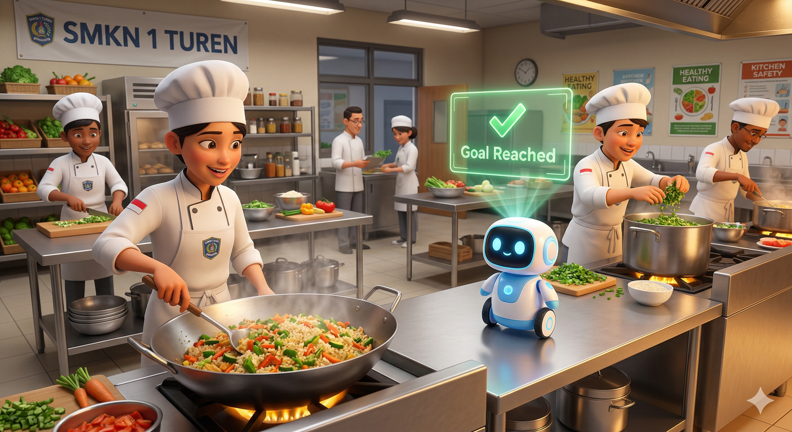
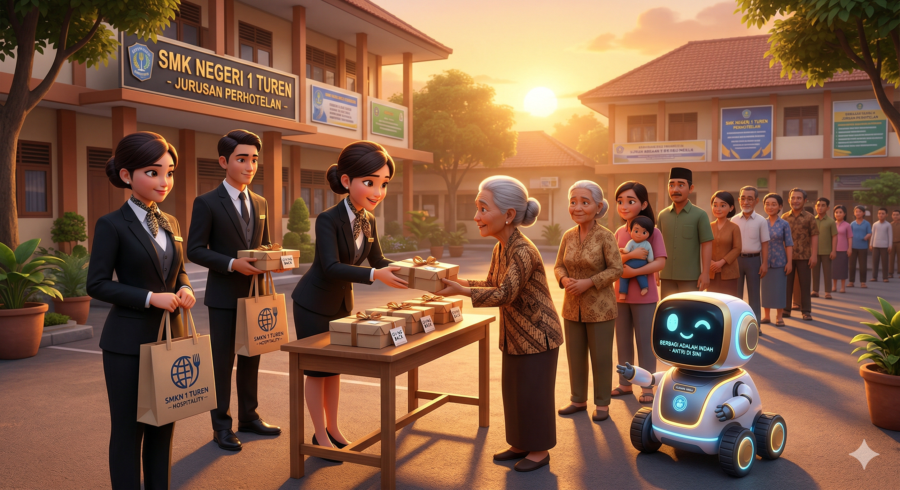
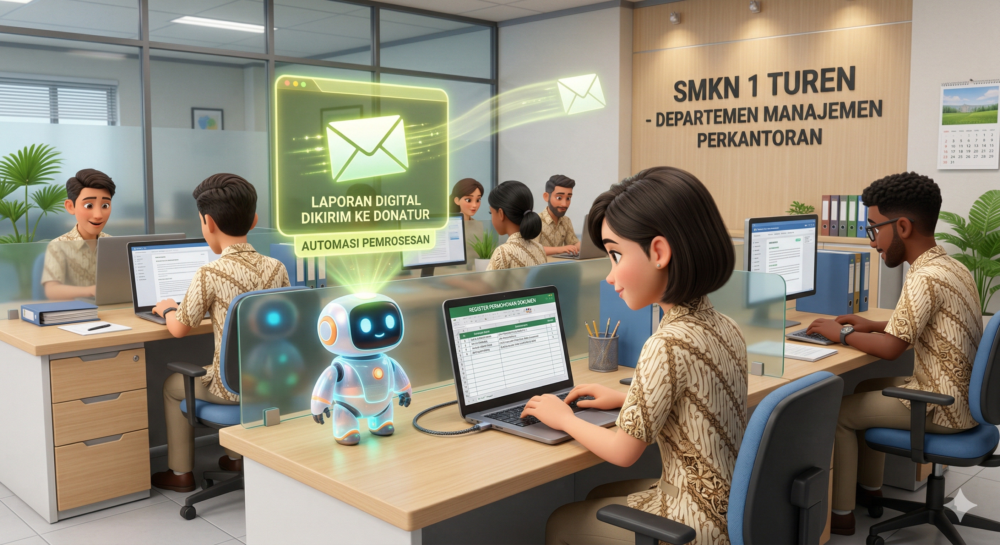

Jejak Pintar Anak Vokasi di Turen
@2026 Davis Rifandi | SMKN 1 Turen
Sore itu di lab komputer SMKN 1 Turen, suasana terasa berbeda. Siswa Teknik Komputer dan Jaringan sedang fokus melakukan coding dan merakit perangkat keras. Di tengah meja, sebuah robot desk pet AI yang mereka namakan "Bolobot" akhirnya menyala.

Mereka ingin bulan puasa tahun ini lebih berdampak. Bolobot diprogram secara khusus. Bukan sekadar pengingat waktu salat, tapi sebagai "Otak Penggerak" yang akan menyinergikan misi kebaikan dari seluruh jurusan di sekolah.
Bolobot memancarkan hologram data panti asuhan dan kaum dhuafa di sekitar Turen. Merespons data tersebut, siswa Bisnis Digital dengan cepat merancang website crowdfunding untuk menyebarkan kampanye donasi secara online.
Di sisi lain, siswa Akuntansi mengambil peran pengawasan. Mereka memantau dashboard keuangan secara presisi, memastikan setiap rupiah yang didonasikan masyarakat tercatat dengan rapi, transparan, dan akuntabel.
Agar aman dibawa keliling sekolah dan desa, Bolobot membutuhkan pelindung (casing) yang modis. Siswa Desain dan Produksi Busana dengan kreativitasnya menyulap limbah kain perca menjadi pakaian kecil yang canggih dan pelindung modis untuk Bolobot.

Tak hanya untuk Bolobot, mereka juga mengambil inisiatif mulia. Ratusan tote bag kain yang indah dibuat dari bahan ramah lingkungan untuk wadah takjil, siap menggantikan kantong plastik sekali pakai di bazaar Ramadhan sekolah.

Dana terkumpul! Bolobot memancarkan notifikasi hijau ke layar dapur boga. Siswa Kuliner langsung beraksi dengan cekatan, memasak ratusan porsi menu sehat dan bergizi untuk berbuka puasa, memastikan kebersihan dan cita rasa terbaik.

Saatnya distribusi. Siswa Perhotelan mengambil alih garis depan. Mereka menata alur antrean serapi tata rias hotel bintang lima, melayani para penerima takjil dengan senyum tulus, hospitality tingkat tinggi, dan etika yang sangat sopan.

Acara berjalan sukses. Di ruang tata usaha, siswa Manajemen Perkantoran dengan sigap merekap seluruh surat menyurat dan izin desa. Bersama Bolobot, mereka menyusun laporan akhir digital yang dikirimkan ke seluruh donatur secara otomatis.

Mari jadikan Ramadhan ini penuh karya dan nyata dampaknya.
Dukung inovasi kami di media sosial:
#dindikjatim #cabdindikkabmalang
Kolaborasi: @dwianggraeni2105